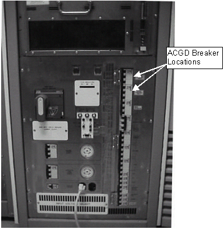
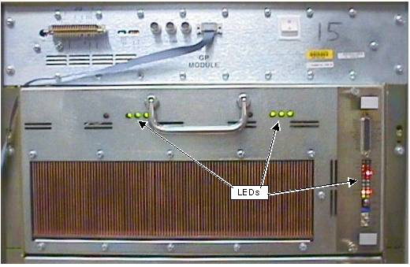
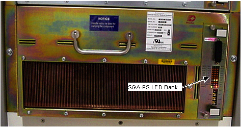
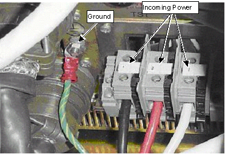

Operating Documentation
Direction 5133315-3, Rev# 14
Signa EXCITE HD 1.5T Service Methods
Module Version 1.0, Version Date 5/3/07
Operating Documentation |
| Required Persons | Preliminary Reqs | Procedure | Finalization |
|---|---|---|---|
| 1 | Not Applicable | 10 mins | Not Applicable |
This procedure explains the steps needed to replace the control board on the Amplifier Power Supply (Amplifier-PS) in the Gradient Cabinet.
| Item | Qty | Effectivity | Part# | Manufacturer | |
|---|---|---|---|---|---|
| Phillips-head screwdriver | 1 | - | - | - | |
| Standard flat head screwdriver | 1 | - | - | - | |
| Medium Crescent Wrench | 1 | - | - | - | |
| Digital Multimeter with high voltage probes | 1 | - | - | - | |
| ESD Grounding Strap | 1 | - | - | - | |
| Item | Qty | Effectivity | Part# | Manufacturer | |
|---|---|---|---|---|---|
| Control Board Assy. | 1 | - | 2250375 | - | |
| ||||
| FATAL ELECTRIC SHOCK HAZARD!! | ||||
| POSSIBLE 800 VOLTS ON CAPACITORS. | ||||
| WAIT AT LEAST 5 MINUTES AFTER UNIT HAS BEEN TURNED OFF BEFORE SERVICING. TO PREVENT ELECTRIC SHOCK, DISCONNECT POWER FROM THE PDU BEFORE YOU PERFORM THE FOLLOWING PROCEDURES. PERFORM LOCKOUT / TAGOUT PROCEDURE. |
Remove power from the Gradient by turning off the Gradient 208V Control Power and the Gradient 420 V Power on the Front Panel of the PDU. See Illustration 1.
Illustration 1: Gradient Cabinet-PDU (front Cover Removed)

Lock out the breaker panel and tag it.
Verify that the Gradient cabinet fans have stopped and become silent, and that all LEDs on the front of all 3 Amplifier modules and the Amplifier Power Supply module are unlit (see Illustration 2 and Illustration 3). This indicates that the 208 VAC and 3-phase 420 VAC power has been removed from the Gradient.
Illustration 2: Gradient Cabinet - Amplifier Led Distribution

Illustration 3: Gradient Cabinet-Gradient-PS LED Distribution

Wait 5 minutes after the power has been removed from the Gradient cabinet to insure that the capacitors have had time to discharge (bleed–down).
Verify that power has been removed from the cabinet. Take a Digital Multi-meter and set it to its highest AC voltage range and on the terminal block in the rear of the cabinet of the Amplifier-PS, measure between the ground connection and the incoming power connection at the black wire (see Illustration 4). Repeat this measurement between the ground connection and the red wire, and between the ground connection and the white wire. A measurement of 0 VAC indicates that the 420V incoming power has been successfully turned off.
Illustration 4: TERMINAL STRIP

No finalization steps.